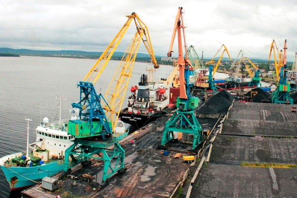

Прошлое

История морского порта начинается в далёком 1965 году. Порт был построен для доставки материалов и продовольствия в Красноастанск, а также для вывоза полезных ископаемых из Красноастанска.
Настоящее
Сегодня порт занимается пассажирскими и грузовыми перевозками, в гораздо больших масштабах, чем раньше. Способствовало развитию порта развитие портовой инфраструктуры и увелечение объёмов добычи полезных ископаемых в шахтах Красноастанска
Будущее

В будущем порт Красноастанска будет ещё больше, уже сегодня планируются множественные улучшения паромов, создания новых причалов, а также увелеения корабельного оборота. Увелеение добыи в шахта Красноастанска также поспосубствует улучшению порта, а ведь такие проекты находяться уже на стадии разработки.